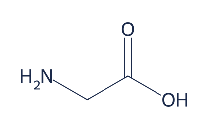

Glycine
3g
Per serving. Powder, 30 servings, scoop included.

What it is
The smallest amino acid, sold as a plain powder. 3 g is roughly a level teaspoon. It tastes mildly sweet and dissolves in water. We sell powder because 3 g would take six large capsules, and no one wants six capsules.
Glycine supports restful sleep.
The evidence
In a small randomized crossover study, 11 adults who were unhappy with their sleep took 3 g of glycine before bed. They reported better sleep quality, and sleep lab recordings showed they fell asleep faster, with no change to overall sleep structure. The dose in that study is the dose in this tub.
Read the study: Yamadera et al. 2007, Sleep and Biological Rhythms
Why grade B
A human trial at exactly our dose, with objective sleep recordings. But it was tiny: 11 people. Related trials point the same way, yet small consistent evidence is still small. Grade B, with that caveat in plain sight.
How to take it
Stir 3 g into water or herbal tea, 30 to 60 minutes before bed. The slight sweetness makes it one of the easier powders to drink plain.
Who this is not for
- People who expect a strong knockout effect. Glycine is subtle at best. If you notice nothing after a few weeks, stop buying it.
- People who dislike powders and routines. If you will not actually stir it into water each night, the evidence does not matter.
- Anyone pregnant, breastfeeding, under 18, or on prescription medication, without a doctor's OK first.
EUR 24
30 servings. Also in the full stack, EUR 89.